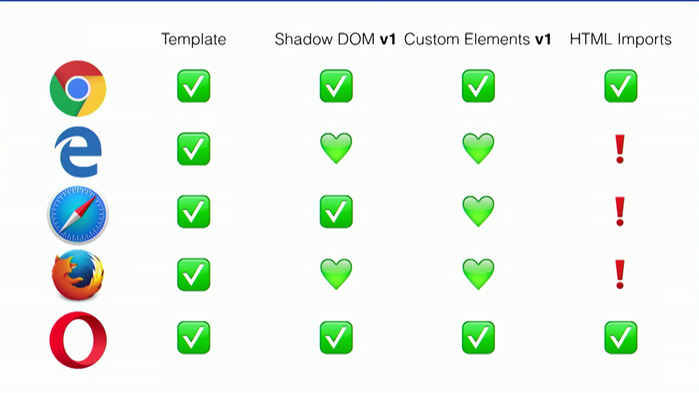
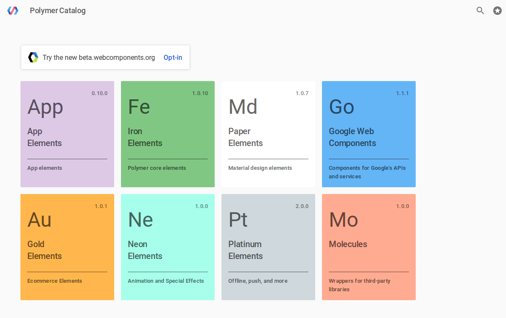
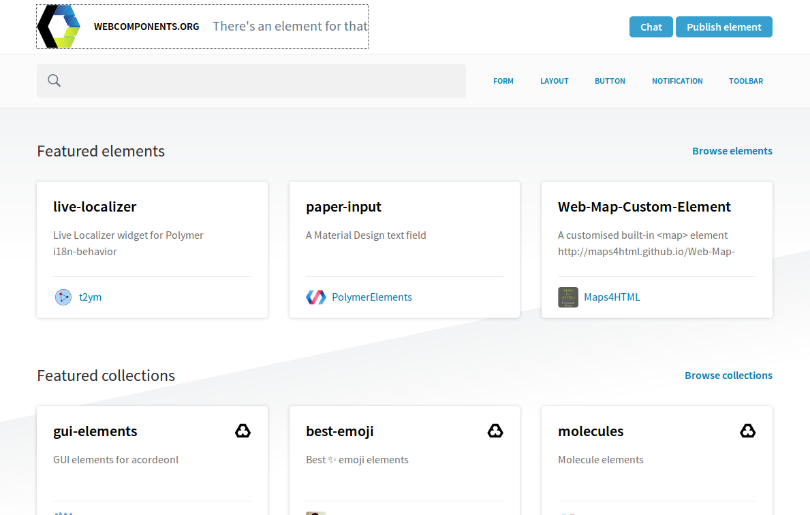
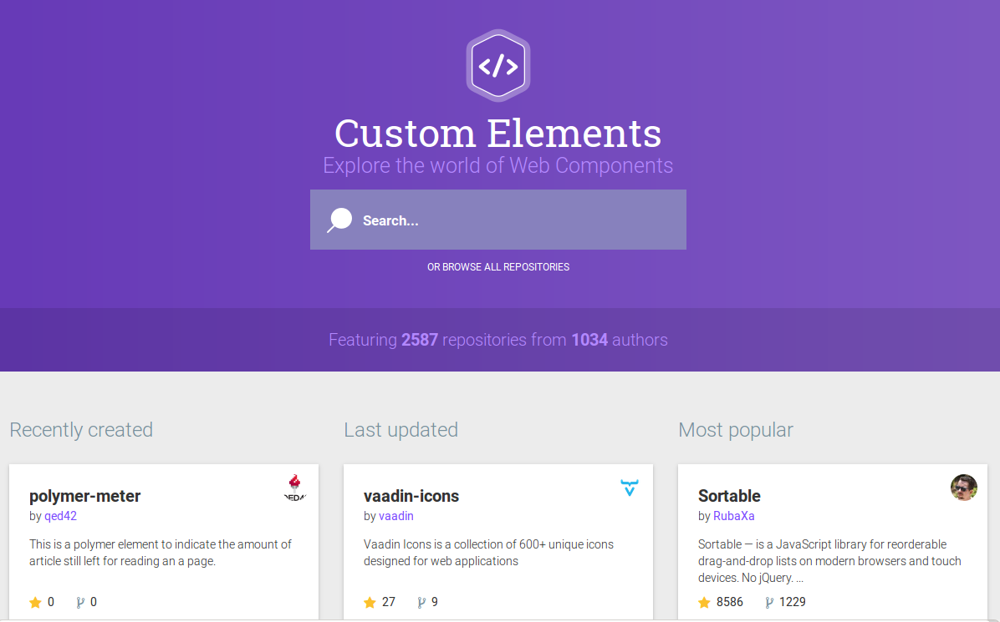
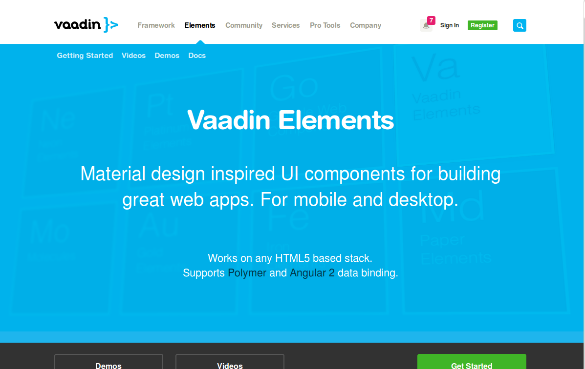
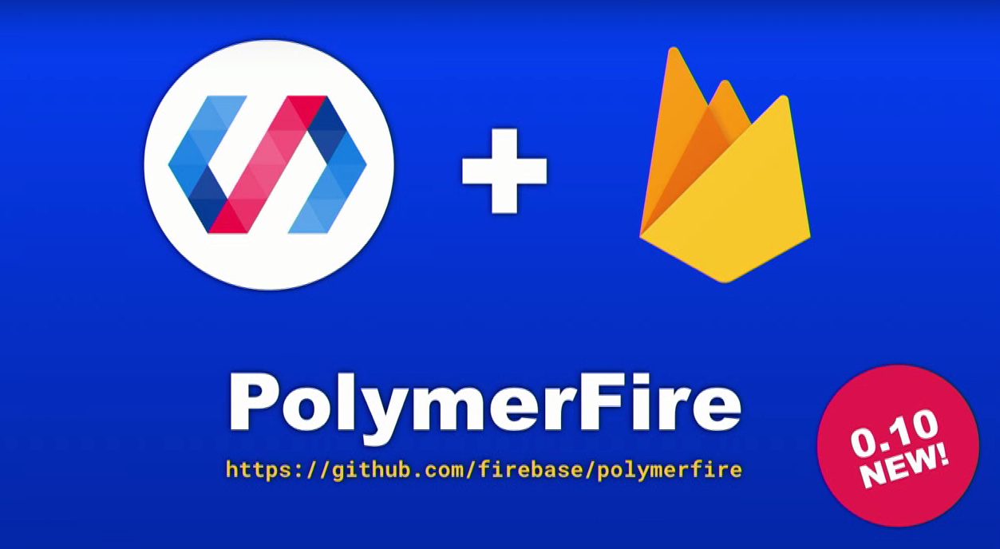
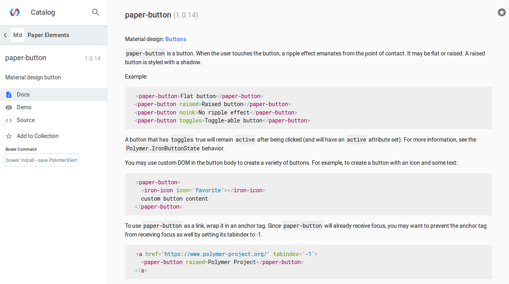
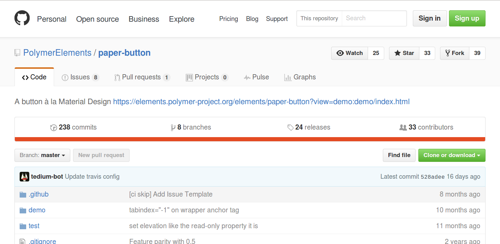

Polymer Summit 2016
A conference about Polymer
a web framework developed by Google
on top of Web Components
Building blocks
Some content >>> HTMLDivElement
link text >>> HTMLAnchorElement
Web Components
Web Components
- Custom Elements
- HTML Templates
- Shadow DOM
- HTML Imports
Custom Elements
HTML Templates
Shadow DOM
HTML Imports
Browser Support

Polymer
Polymer 2.0
- Web components 1.0
- ES 6
- Removes custom abstractions
- Upgrader
- Hybrid mode
Toolbox
- Polymer CLI
- Lighthouse
- Linter
Installation
npm install -g polymer-cli
mkdir my-awesome-app
cd my-awesome-app
polymer init
polymer serve --open
Add a new element
bower install --save PolymerElements/icon-toggle-demo
Polymer Catalog

Web Components.org

Custom Elements.io

Vaadin Elements

Types of Custom Elements
- Visual
- Non visual
- Wrapper for third-party APIs
Companies that use Polymer
Main takeaways
- PRPL pattern
- Progressive Web Apps
- #useThePlatform
- Be Lazy Do Less
PRPL pattern
- Push critical resources for the initial route.
- Render initial route asap.
- Pre-cache remaining components.
- Lazy-load and create remaining routes on demand.
P.W.A.
Progressive Web Apps
P.W.A.
Progressive Web Apps - checklist
- Website is served over HTTPS
- Website works cross-browser
- Pages each have a unique URL
- Pages have responsive layouts that render nicely in all devices
- The start URL loads while offline
- Metadata is provided for an "Add to Home screen" icon
https://goo.gl/Pv1zy4
#useThePlatform
http://xkcd.com/1367/
Be Lazy Do Less
Highlights
- The Way of the Web - ING
- Polymer Butter and Firebase Jelly
- Production-Ready Polymer Elements
- Adapting to the Mobile Web F̶u̶t̶u̶r̶e̶ Present
RDD
Conway's law
Polymer Butter and
Firebase Jelly
Firebase
Polymer Fire

Production-Ready Polymer Elements
- Have great documentation
- Have a demo page
- Each element has each own repository
- Thoroughly tested
Have great documentation

Each element has each own repository

Thoroughly tested
- Linting
- Unit tests
- Web Component Tester (WCT)
- Continuous Integration
Adapting to the Mobile Web F̶u̶t̶u̶r̶e̶ Present